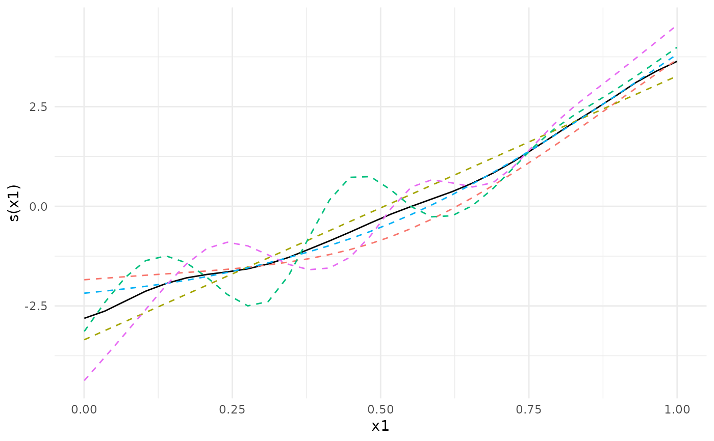
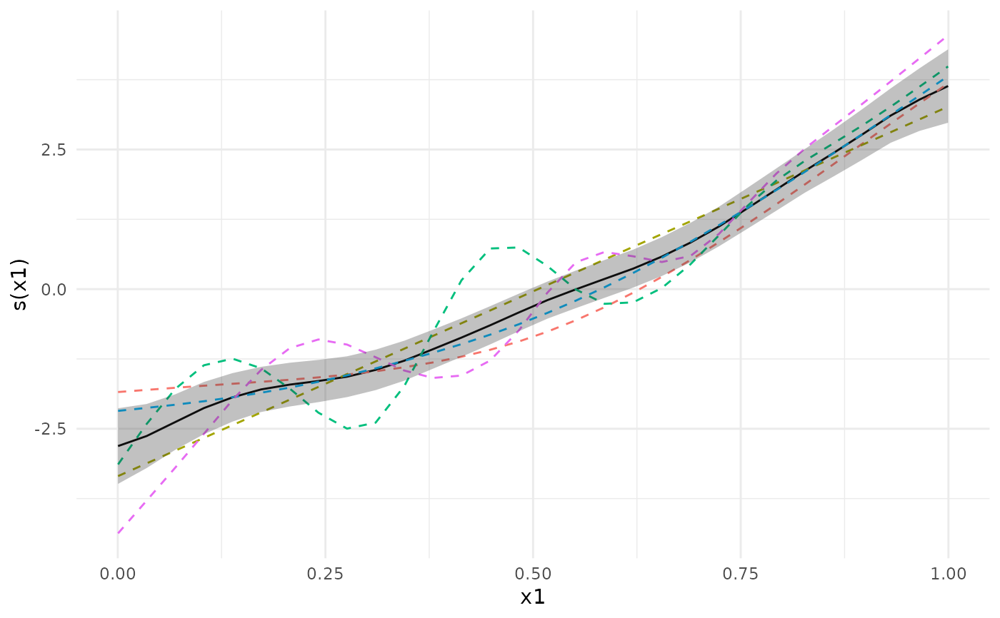

Plot the meta-analytic estimate of a smooth term along with the separate fits in each cohort.
# S3 method for metagam
plot(x, term = NULL, ci = "none", legend = FALSE, only_meta = FALSE, ...)Object returned by metagam.
The smooth term to plot. Defaults to NULL, which means
that the first term is plotted.
Type of confidence bands to plot around the meta-analytic fit.
Defaults to "none", which means the no bands are plotted. Other options are
"simultaneous", "pointwise", and "both". Simultaneous confidence bands
require that metagam was run with nsim not equal to
NULL.
Logical specifying whether or not to plot a legend. Defaults to
FALSE.
Logical specifying whether to include the fits for each
study, or to only plot the meta-analytic fit. Defaults to FALSE.
Other arguments to plot.
The function is called for its side effect of producing a plot.
library(metagam)
library(mgcv)
## Create 5 datasets
set.seed(1234)
datasets <- lapply(1:5, function(x) gamSim(scale = 5, verbose = FALSE))
## Fit a GAM in each dataset, then use strip_rawdata() to remove
## individual participant data
models <- lapply(datasets, function(dat){
## This uses the gam() function from mgcv
model <- gam(y ~ s(x0, bs = "cr") + s(x1, bs = "cr") + s(x2, bs = "cr"), data = dat)
## This uses strip_rawdata() from metagam
strip_rawdata(model)
})
## Next, we meta-analyze the models.
## It is often most convenient to analyze a single term at a time. We focus on s(x1).
meta_analysis <- metagam(models, terms = "s(x1)", grid_size = 30)
## We can print some information
summary(meta_analysis)
#> Meta-analysis of GAMs from cohorts, using method FE.
#>
#> Smooth terms analyzed: s(x1).
#>
#>
#>
## We can plot the meta-analytic fit together with the individual fits
plot(meta_analysis)

plot(meta_analysis, ci = "pointwise")

## We can also compute p-values and simultaneous confidence intervals, by setting the nsim argument.
## For details, see the separate vignette.
if (FALSE) {
meta_analysis <- metagam(models, terms = "s(x0)", grid_size = 30, nsim = 1000)
summary(meta_analysis)
plot(meta_analysis, ci = "both")
plot(meta_analysis, ci = "simultaneous")
}